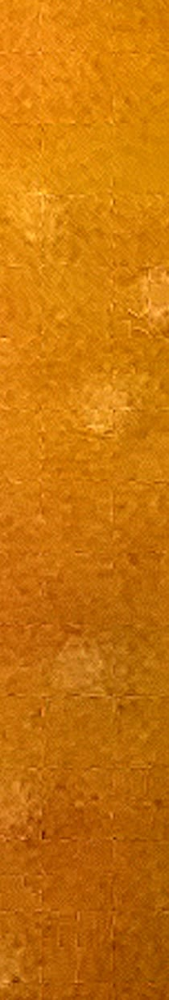

02
Staying On 2018
A broken family, under an expat sun that never quite warms.
“Told with humour and enormous compassion… a beguiling story about broken people who have all the feelings and none of the words. Utterly captivating.”Damien OwensRead